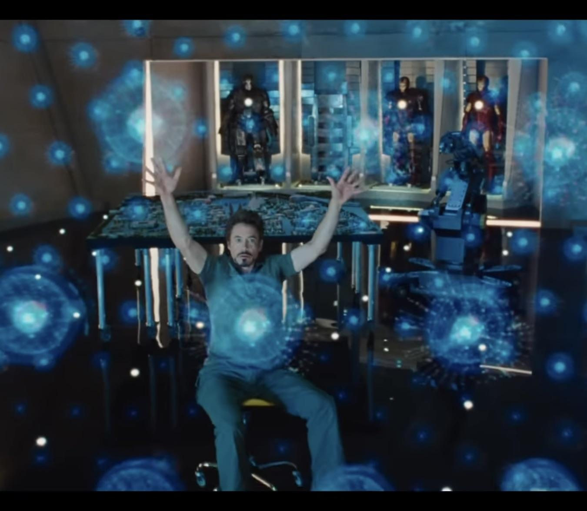

Usually before the use of computers, communication was limited to face-to-face interactions and written correspondence. However now with the use of computers and digital technologies, communication has become much more accessible and efficient. Patients dont have to wait months just to get back their diagnosis and can just get an email. Even though this is good it could make people lose the "human factor" to receiving a diagnosis. A good place for more examples of this is here
There are many new technology that has been developed to improve medicine. These include telemedicine, electronic health records, and medical imaging. These allow for more efficient and accurate diagnosis and treatment. This means the doctors can provide better care to their patients and give them improved outcomes. Here is some examples of the technologies and a link here to give you more information.

Diagnosis is the process of identifying a disease or condition based on its signs and symptoms. It is an important part of medicine, as it allows doctors to determine the best course of treatment for their patients. Diagnosis can be made through a variety of methods, including physical examinations, laboratory tests, and imaging studies. Accurate diagnosis is essential for effective treatment and improved patient outcomes. A good link for this is here.